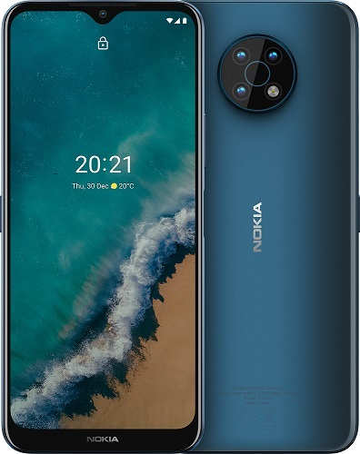

A Nokia Corporation a világ egyik legnagyobb telekommunikációs vállalata. Székhelye a finn főváros, Helsinki melletti Espoo Keilaniemi kerülete.[4] Nyilvánosan jegyezhető részvénytársaság, a NYSE-n NOK néven fut. Jelmondata: „Connecting People” (szabad fordításban: „Összekapcsoljuk az embereket”). 1865-ben alapította Fredrik Idestam a finn Nokia városában (Tamperétől) 15 km-re nyugatra).

Fő területe a telekommunikáció. Mobilkommunikációs eszközei megtalálhatók a világ összes régiójában, és lefedik az összes nagyobb kommunikációs szabványt: többek között a GSM-, a CDMA- és a WCDMA-hálózatokban használhatók. Termékei között megtalálhatók még az otthoni kommunikációs eszközök, a mobil-játékeszközök, a kiegészítő felszerelések. Az Ovi platformon keresztül internetes szolgáltatásokat is kínál.